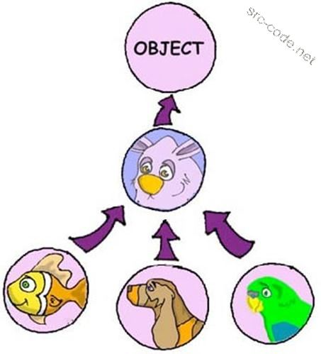

Наследование
Наследование — это одна из немногих новых вещей, которые действительно вышли на сцену благодаря ООП. Нет, объектно-ориентированные языки не создали новую идею — наследование вполне можно реализовать и в любой другой парадигме — однако ООП впервые вывело эту концепцию на уровень самого языка. Очевидны и плюсы наследования: когда вас почти устраивает какой-то класс, вы можете создать потомка и переопределить какую-то часть его функциональности. В языках, поддерживающих множественное наследование, таких как C++ или Scala (в последней — за счёт traits), появляется ещё один вариант использования — mixins, небольшие классы, позволяющие «примешивать» функциональность к новому классу, не копируя код.